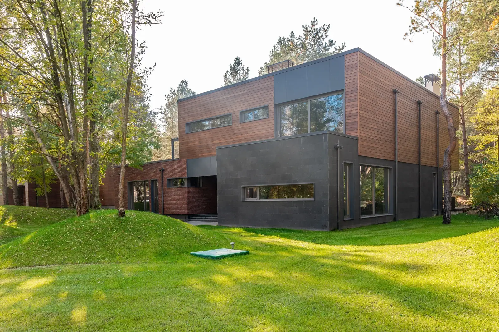

Nottuln · 2021
Haus im Wald
Ein Haus zwischen Kiefern, mit Türen nach allen Seiten.
Das Grundstück am Waldrand von Nottuln war lange unbebaut, weil kein Haus zwischen die Kiefern passen wollte. Der Entwurf folgt den Bäumen: zwei versetzt gestapelte Geschosse, unten dunkler Ziegel, oben Holz, mit Flachdach und Fenstern in alle Richtungen.
Jedes Zimmer im Erdgeschoss hat eine Tür in den Garten. Geheizt wird mit einer Wärmepumpe, das Dach trägt eine Photovoltaikanlage. Die Kiefern stehen noch alle.